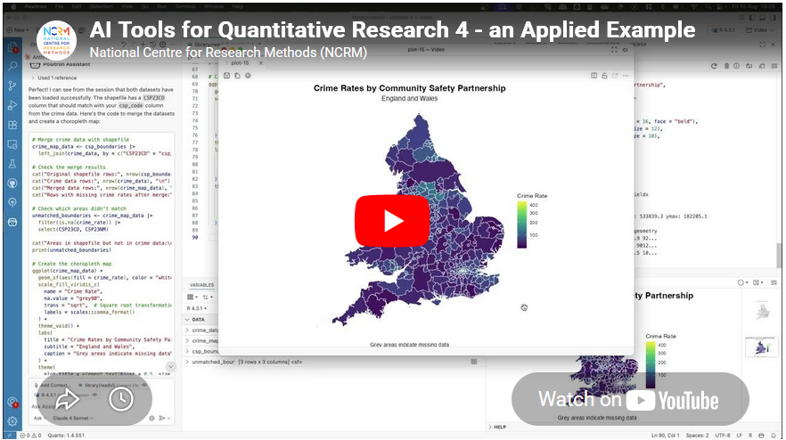

Generative AI Tools for Mapping
NCRM: Generative AI Tools for Quantitative Research
David Bann and Liam Wright have put together a great guide to Generative AI Tools for Quantitative Research on the NCRM resources site. This is a great overview of what Generative AI is, how it works and all of the potential different models available, both commercial and open source, as well as how to run some models locally rather than relying on the cloud.
They are also very focused on the practical elements of how to actually use the tools in your work, discussing the different approaches as well as highlighting the importance of making sure you do not share sensitive data with cloud services.
They also have a great selection of videos for setting up both cloud based and local LLMs for working with Stata and R scripts in a number of tools including VS Code:
- Video 1: Obtaining code via chatbots in R and Stata languages
- Video 2: Illustration of using LLMs to edit R scripts in VS Code
- Video 3: Agentic analyses using command line interfaces
Video 4: an applied example

Video 4 in their series had a thumbnail of a map, so of course that got me interested! Anyone reading this blog should know that I am a big fan of maps :-)
This was a great example of using Positron IDE (produced by the same people who make RStudio) to help write code that creates a map of crime rates across England and Wales. They give a great overview of the process of making this map, and say:
- “Neither of us is a geographer, but we generated the map in just a few minutes! What a time to be alive. We hope this gives researchers inspiration to increase the ambitiousness of their research.”
It really shows the potential this technology has about making a wide range of tools much more widely available and used.
Limitations
However, it also shows some of the limitations of working with a generative AI. It is missing some key subject specific knowledge, with which you could turn this reasonable map to an excellent map without a lot more work.
I would recommend watching the video for more details, but I will summarise the key bits here (thanks Claude.ai for the summary, which I tweaked!)
- Overview - Liam demonstrates how to use Claude (an LLM) integrated within the Positron IDE to perform geographic data analysis in R — even without prior experience in that area.
- Data setup – He has two datasets downloaded: crime rate data from the ONS (at community safety partnership level) in an Excel file, and the community safety partnership boundary shapefiles from the Ordnance Survey.
- Importing the data – He prompts Claude to write R code to import the Excel spreadsheet, specifying details like the sheet name, relevant columns, and the need to drop missing rows and rename variables. When the code throws an error, he simply pastes the error back into Claude, which fixes it successfully.
- Reading the shapefile – He asks Claude for code to load the geographic boundary data and plot a basic outline of England and Wales to verify it loaded correctly.
- Merging and mapping – He asks Claude to merge the crime data with the shapefile and plot the data on a map. Notably, Claude correctly identified the matching column names in the shapefile without being told — because Positron automatically sends session metadata to the API in the background.
- Improving the visualisation – The initial map was hard to read due to a skewed distribution of crime rates. He prompts Claude to address this, and it produces a histogram and an adjusted plot. Claude also spots a major outlier (Westminster, with a crime rate of 446 vs. a mean of 81) from the console output.
- Removing outliers – A final prompt asks Claude to remove outliers using the interquartile range method and replot. Five areas are removed (Westminster, Camden, Manchester, Kensington & Chelsea, Middlesbrough), resulting in a much clearer map with better regional differentiation.
- Suggesting further analyses – He ends by asking Claude to suggest follow-up analyses (e.g. spatial autocorrelation), showing how it can also guide next steps.
So - very good as a first effort.
Just to be clear I am not trying to be critical of Liam or the resources he has created - these are amazing and it is great that they are out there. I am trying to highlight some of the limitations of relying exclusively on GenAI for working in an area new to you. In fact, Liam explicitly acknowledges this and has, in fact, signed up to one of my upcoming courses on to learn more about GIS :-)
So, what do I think Claude missed?
- Data setup – Liam already did most of the hard work in a) finding the data of crime rates and also b) finding the relevant spatial data to display this. So Claude had an easy time here.
- The first step here is knowing you need both files - the data and the boundaries. It’s also important to make sure the Excel file (rows of data) and the boundary data match, both in terms of what boundary they use (Community Safety Partnership boundaries in this case) but also what year or version of boundary they use.
- These change over time, and searching shows me that there are at least two versions of these on the ONS GeoPortal - December 2021 and December 2023. I’m not sure which version Liam is using in his example.
- Importing the data – This went really well, and I am impressed how Claude handled a very common issue in R - with receiving all the columns but only needing 4.
- Reading the shapefile – Again, this works really well.
- Merging and mapping – This works well, and Liam specifies to Claude where the codes are in the Excel file to join the data, but Claude works out where they are in the shapefile.
- Of note, R on its own (without AI) can do a merge without the column names being specified - if they are they same in both data sets. I don’t think they are in this case though, so well done Claude.
- Improving the visualisation – The initial visualisation isn’t that great. Liam picks up Claude on this and asks for improvements. Looking for skewed data is a great idea - and I would agree that Westminster data should be removed.
- The interesting question is why the crime rate is so high there. I would suggest this is because Westminster has a relatively low resident population - i.e. very few people live there. However a lot of people work there, so there is still crime, but the low denominator makes the rate very high. This is something that in the GIS world we would call critical spatial thinking - being critical of your data and asking why you see certain values and patterns. Claude won’t tell us this - and experience and training is needed to have a guess as to why this is.
- Removing outliers - The other element of removing the skewed data is interesting. Claude suggests the IQR method - which I presume is a standard approach from a statistics point of view? I am not a statistician so I don’t know whether this is a reasonable thing to do or not. However it does mean we lose a total of 5 values - which is not something we would normally do in GIS. The other element of the visualisation is that we would usually classify the data before showing them on a map - i.e. group them together into 5 or 6 groups. This type of map is what we would call a choropleth map.
- In fact, when I asked Claude to summarise the transcript, it included the term choropleth map in the initial summary it created - despite the fact that that word wasn’t in the transcript at all.
- So, with a choropleth map it is standard practice to classify the data - usually using the Natural Breaks classification. Again, this is something that training will teach you - along with the reasons why and why this makes the map easier to interpret.
- Another very minor point is that I would usually suggest using the
tmappackage rather than theggplot2package for creating maps in R.ggplot2is a generic graphics package - it can do maps, but can do other graphics as well.tmapis a specific mapping package, and the defaults for the maps it creates are better than the defaultsggplot2uses - in my opinion. A lot of preference is down to individual style - there is no categorical right or wrong here. David O’Sullivan wrote a very nice comparison of the differences on his blog.
- Suggesting further analyses – Here Claude makes some useful suggestions for further analysis (e.g. spatial autocorrelation and Local Moran’s I) which are good suggestions, and there is clearly lots more potential to explore here.
Summary
So overall, generative AI is a fantastic tool and thanks to much to David and Liam for putting together this resource, and thanks to the NCRM for hosting it. It’s a great starting point for any new method, but has some clear limitations. If you know the field, then you already know what the limitations are, but if you are new to the field beware - generative AI will not tell you that it does not know things or what it might be missing. It’s well known for being over confident, so remember to bring your critical thinking when making use of these technologies!
If you want to learn more about GIS, and using R as a GIS, check out my up coming training courses with NCRM in April and May this year. If you have any questions, please do contact me.